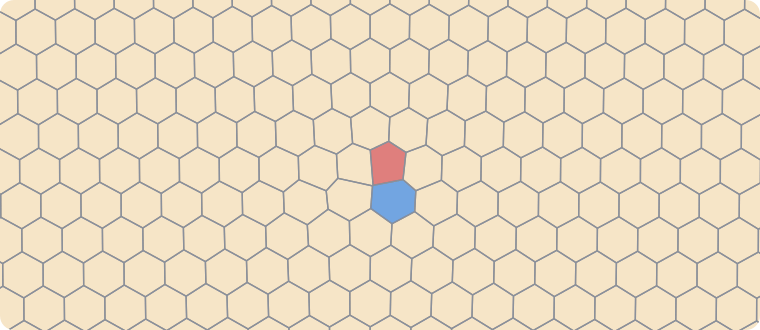
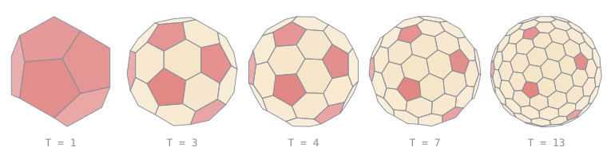
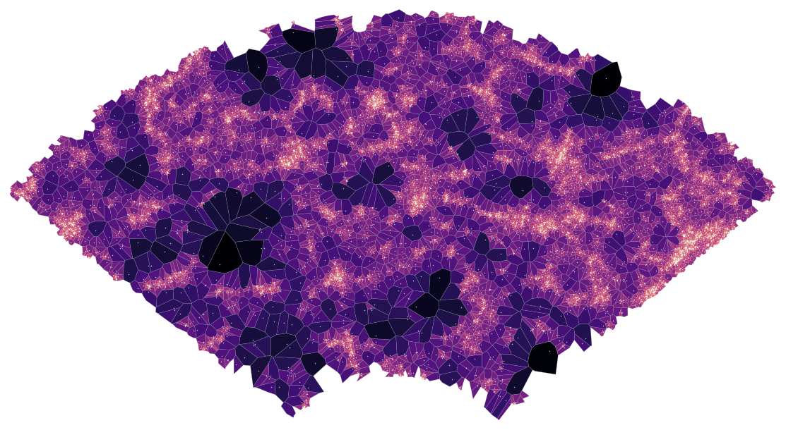

Insects and viruses solve tiling problems too. This page is mostly a review of what is known, with links; the one thing we computed ourselves is the bee cell against Fejes Tóth’s cell, and both are now in our catalog.
Honeycombs
In the plane the question is closed. Regular hexagons divide the plane into equal cells with the least total wall length: L. Fejes Tóth proved it for convex cells (1943), T. Hales in general (2001).
In space it is not. A comb has two layers of cells back to back, and the bottom between them is the interesting part. Bees close each cell with three rhombi. In 1964 Fejes Tóth showed that bees are not optimal: a bottom of two hexagons and two rhombi uses a little less wax. Real bees occasionally build such cells (up to 18% of cells in natural combs, Yang et al. 2022), and Dauter and Jaskolski (2025) optimized Tóth’s geometry further.
Our computation. For a fixed cell volume and hexagon, the wax that depends on the bottom shape reduces to one number F (in units of the squared hexagon side). We minimized F over all bottoms of each type:
Bottom
F
vs flat
flat
2.5981
—
bees: 3 rhombi
2.1213
−18.4%
Fejes Tóth: 2 hexagons + 2 rhombi
2.1084
−18.8%
The bee optimum is exactly 3/√2 with the angles of the rhombic dodecahedron, the classical answer, which checks the method. Tóth’s bottom saves another 0.61% of F, about 0.05% of all wax for a worker cell (5.2 mm wide, 11 mm deep): the gain is real but tiny, and with thick wax walls the bees’ design may win back (Weaire and Phelan 1994).
A nice detail. Continue the comb layer by layer and every cell becomes a translate of one solid. The bees’ cell is then combinatorially a rhombic dodecahedron (Kepler’s cell), Tóth’s cell a truncated octahedron (Kelvin’s cell). Tóth beats the bees the same way Kelvin’s foam beats Kepler’s.
Defects: where five and seven meet
A comb is not a perfect crystal. Where small worker cells meet large drone cells, bees and wasps insert a pentagon next to a heptagon, exactly the dislocation of a crystal lattice. Smith et al. (PLoS Biology 2023) measured 22 745 cells of 5 bee and 5 wasp species: all of them use intermediate cells and such pairs, more often the larger the size difference; a simple geometric model predicts how often. In paper wasp nests (Polistes), Krishna, Gopinath and Bhattacharjee (2022) found only short-range order, like an amorphous solid, while the orientation of the hexagons is kept across the whole nest; the defects are 5–7 pairs and Stone–Wales quadrupoles.

A comb with one dislocation, drawn by us: cell centres on a triangular lattice, displaced by the elastic field of an edge dislocation, and their Voronoi cells. Exactly one pentagon (red) and one heptagon (blue) appear; everything else stays hexagonal.
Hornet nests
Hornets (Vespa) build several horizontal combs stacked like floors and wrapped in a paper envelope; in V. affinis the combs rise in a spiral staircase and cell diameters are roughly bimodal (Sengupta and Ghorai 2023). Apart from such descriptions we found no geometric study of hornet combs and no open 3D data, so there is nothing to compute yet.
Virus capsids: tilings of a sphere
The protein shell of many viruses is an icosahedral tiling of a sphere. In the Caspar–Klug theory (1962) the proteins form 12 pentamers and 10(T − 1) hexamers, T = h² + hk + k². Twarock and Luque (2019) generalized this to eight families built from Archimedean tilings of the plane, which explains many viruses that did not fit; Mannige and Brooks (2008–2010) showed that most capsid families can be drawn as tilings of the sphere by one tile per protein, and arranged them into a “periodic table”.

Caspar–Klug tilings drawn by us: Voronoi cells of the capsomer centres on the sphere for T = 1, 3, 4, 7 and 13. There are always exactly 12 pentagons (red); the rest are hexagons.
Minerals: zeolites
Zeolites are minerals (and industrial catalysts) whose silicate framework is full of cages and channels. The framework splits space naturally into cages: its natural tiling. Sodalite tiles space with truncated octahedra, the same Kelvin cells as above; zeolite A (LTA) with large truncated cuboctahedra, sodalite cages and cubes. Natural tilings of all known frameworks have been computed and catalogued by Blatov, Proserpio and co-workers (194 frameworks in 2010, 239 in 2018, plus a collection of all tiles), and tilings by a single kind of cage were enumerated by Delgado-Friedrichs and O’Keeffe (2005). The cages are topological polyhedra, not congruent convex tiles, so they do not bear on the record of problem 4.
Space: the cosmic web
Galaxies are not scattered evenly: they line up in threads and walls around huge empty voids, the “cosmic web”. Cosmologists call it a foam and routinely divide space into Voronoi cells around galaxies to find voids. We took 114 643 galaxies from the open SDSS survey (out to about 1.3 billion light years, bright enough that the sample is complete) and compared their cells with cells of random points.

A thin slice of space (4° of the sky) from the SDSS survey: each galaxy (white dot) with its Voronoi cell, dark for large cells (voids) and bright for small ones (crowded threads and clusters). The observer is at the bottom, below the picture.
Sizes are very different from random: galaxy cells vary in volume three times more, because of threads and voids.
Shapes are not: among cells with the same number of faces, galaxy cells are as symmetric and as varied as cells of random points (for example, 16% and 19% symmetric among 12-faced cells). So the cosmic “foam” is a foam in its geometry but not in the shapes of its cells; a real ageing foam has two to three times more symmetric cells.
N. A. Anurova, V. A. Blatov, G. D. Ilyushin, D. M. Proserpio, Natural tilings for zeolite-type frameworks, J. Phys. Chem. C 114 (2010) 10160–10170. link
O. Delgado-Friedrichs, M. O’Keeffe, Isohedral simple tilings: binodal and by tiles with ≤ 16 faces, Acta Cryst. A 61 (2005) 358–362.
L. Fejes Tóth, What the bees know and what they do not know, Bull. AMS 70 (1964) 468–481. pdf
T. C. Hales, The honeycomb conjecture, Discrete Comput. Geom. 25 (2001) 1–22. arXiv
D. Weaire, R. Phelan, Optimal design of honeycombs, Nature 367 (1994) 123.
Z. Dauter, M. Jaskolski, Honeycombs – their variety, topology and symmetry, Acta Cryst. A 81 (2025). link
S. Yang et al., Structure of Fejes Tóth cells in natural honey bee combs, Apidologie (2022). doi
M. L. Smith et al., Honey bees and social wasps reach convergent architectural solutions to nest-building problems, PLoS Biol. 21 (2023) e3002211. PMC
S. Krishna, A. Gopinath, S. M. Bhattacharjee, Ordering and topological defects in social wasps’ nests, Sci. Rep. (2022). arXiv
D. L. D. Caspar, A. Klug, Physical principles in the construction of regular viruses, Cold Spring Harb. Symp. Quant. Biol. 27 (1962) 1–24.
R. Twarock, A. Luque, Structural puzzles in virology solved with an overarching icosahedral design principle, Nat. Commun. 10 (2019) 4414. PMC
R. V. Mannige, C. L. Brooks, Periodic table of virus capsids, PLoS ONE 5 (2010) e9423. PMC
Насекомые и вирусы тоже решают задачи о замощениях. Эта страница — в основном обзор известного, со ссылками; сами мы посчитали одно: пчелиную ячейку против ячейки Фейеша Тота, и обе теперь есть в нашем каталоге.
Пчелиные соты
На плоскости вопрос закрыт. Правильные шестиугольники делят плоскость на равные ячейки с наименьшей общей длиной стенок: Л. Фейеш Тот доказал это для выпуклых ячеек (1943), Т. Хейлс — в общем случае (2001).
В пространстве — нет. Соты — два слоя ячеек, сложенных донышками, и самое интересное — дно между ними. Пчёлы закрывают каждую ячейку тремя ромбами. В 1964 году Фейеш Тот показал, что пчёлы не оптимальны: дно из двух шестиугольников и двух ромбов требует чуть меньше воска. Настоящие пчёлы иногда строят такие ячейки (до 18% ячеек в естественных сотах, Yang et al. 2022), а Даутер и Ясколски (2025) ещё улучшили геометрию Тота.
Наш расчёт. При фиксированном объёме ячейки и шестиугольнике воск, зависящий от формы дна, сводится к одному числу F (в единицах квадрата стороны шестиугольника). Мы минимизировали F по всем доньям каждого типа:
Дно
F
к плоскому
плоское
2,5981
—
пчёлы: 3 ромба
2,1213
−18,4%
Фейеш Тот: 2 шестиугольника + 2 ромба
2,1084
−18,8%
У пчёл оптимум ровно 3/√2 с углами ромбододекаэдра — классический ответ, это проверка метода. Дно Тота экономит ещё 0,61% F, около 0,05% всего воска рабочей ячейки (ширина 5,2 мм, глубина 11 мм): выигрыш настоящий, но крошечный, а при толстых восковых стенках пчелиный вариант может отыграть своё (Weaire и Phelan 1994).
Красивая деталь. Если продолжить соты слоями, каждая ячейка — параллельная копия одного тела. Пчелиная ячейка тогда комбинаторно ромбододекаэдр (ячейка Кеплера), ячейка Тота — усечённый октаэдр (ячейка Кельвина). Тот обыгрывает пчёл так же, как пена Кельвина обыгрывает Кеплера.
Дефекты: где встречаются пять и семь
Соты — не идеальный кристалл. Где мелкие рабочие ячейки встречаются с крупными трутневыми, пчёлы и осы ставят пятиугольник рядом с семиугольником — ровно дислокацию кристаллической решётки. Smith et al. (PLoS Biology 2023) измерили 22 745 ячеек у 5 видов пчёл и 5 видов ос: все используют промежуточные ячейки и такие пары, тем чаще, чем больше разница размеров; простая геометрическая модель предсказывает, как часто. В гнёздах бумажных ос (Polistes) Кришна, Гопинатх и Бхаттачарджи (2022) нашли только ближний порядок, как в аморфном веществе, при этом ориентация шестиугольников сохраняется по всему гнезду; дефекты — пары 5–7 и квадруполи Стоуна–Уэйлса.
Соты с одной дислокацией, нарисованные нами: центры ячеек на треугольной решётке, сдвинутые упругим полем краевой дислокации, и их ячейки Вороного. Появляются ровно один пятиугольник (красный) и один семиугольник (синий); остальное остаётся шестиугольным.
Гнёзда шершней
Шершни (Vespa) строят несколько горизонтальных сот, уложенных этажами в бумажной оболочке; у V. affinis соты поднимаются винтовой лестницей, а диаметры ячеек примерно двугорбые (Sengupta, Ghorai 2023). Кроме таких описаний, геометрических работ о сотах шершней и открытых 3D-данных мы не нашли — считать пока не на чем.
Вирусные капсиды: замощения сферы
Белковая оболочка многих вирусов — икосаэдрическое замощение сферы. В теории Каспара–Клуга (1962) белки образуют 12 пентамеров и 10(T − 1) гексамеров, T = h² + hk + k². Тварок и Луке (2019) обобщили её до восьми семейств, построенных из архимедовых замощений плоскости, что объяснило многие «неправильные» вирусы; Маннидж и Брукс (2008–2010) показали, что большинство семейств капсидов можно нарисовать как замощение сферы одной плиткой на белок, и собрали их в «периодическую таблицу».
Замощения Каспара–Клуга, нарисованные нами: ячейки Вороного центров капсомеров на сфере для T = 1, 3, 4, 7 и 13. Всегда ровно 12 пятиугольников (красные), остальные — шестиугольники.
Минералы: цеолиты
Цеолиты — минералы (и промышленные катализаторы), силикатный каркас которых пронизан полостями и каналами. Каркас естественно делит пространство на полости — это его естественное разбиение. Содалит разбивает пространство усечёнными октаэдрами — теми же ячейками Кельвина, что выше; цеолит A (LTA) — крупными усечёнными кубооктаэдрами, содалитовыми полостями и кубами. Естественные разбиения всех известных каркасов посчитаны и каталогизированы Блатовым, Прозерпио и соавторами (194 каркаса в 2010 году, 239 в 2018-м, плюс коллекция всех плиток), а разбиения одним видом полости перечислили Дельгадо-Фридрихс и О’Киф (2005). Полости — топологические многогранники, а не одинаковые выпуклые плитки, поэтому к рекорду задачи 4 они отношения не имеют.
Космос: паутина галактик
Галактики разбросаны неравномерно: они выстраиваются в нити и стены вокруг огромных пустот — «космическая паутина». Космологи называют её пеной и обычно делят пространство на ячейки Вороного вокруг галактик, чтобы искать пустоты. Мы взяли 114 643 галактики из открытого обзора SDSS (до примерно 1,3 млрд световых лет, только достаточно яркие, чтобы выборка была полной) и сравнили их ячейки с ячейками случайных точек.
Тонкий слой пространства (4° неба) из обзора SDSS: каждая галактика (белая точка) со своей ячейкой Вороного; тёмные — большие ячейки (пустоты), светлые — маленькие (тесные нити и скопления). Наблюдатель внизу, под картинкой.
По размерам — совсем не случайно: объёмы ячеек галактик разбросаны в три раза сильнее — из-за нитей и пустот.
По форме — как случайно: среди ячеек с одинаковым числом граней ячейки галактик так же симметричны и так же разнообразны, как у случайных точек (например, 16% и 19% симметричных среди 12-гранных). Космическая «пена» — пена по геометрии, но не по форме ячеек: у настоящей стареющей пены симметричных клеток в 2–3 раза больше.
N. A. Anurova, V. A. Blatov, G. D. Ilyushin, D. M. Proserpio, Natural tilings for zeolite-type frameworks, J. Phys. Chem. C 114 (2010) 10160–10170. link
O. Delgado-Friedrichs, M. O’Keeffe, Isohedral simple tilings: binodal and by tiles with ≤ 16 faces, Acta Cryst. A 61 (2005) 358–362.
L. Fejes Tóth, What the bees know and what they do not know, Bull. AMS 70 (1964) 468–481. pdf
T. C. Hales, The honeycomb conjecture, Discrete Comput. Geom. 25 (2001) 1–22. arXiv
D. Weaire, R. Phelan, Optimal design of honeycombs, Nature 367 (1994) 123.
Z. Dauter, M. Jaskolski, Honeycombs – their variety, topology and symmetry, Acta Cryst. A 81 (2025). link
S. Yang et al., Structure of Fejes Tóth cells in natural honey bee combs, Apidologie (2022). doi
M. L. Smith et al., Honey bees and social wasps reach convergent architectural solutions to nest-building problems, PLoS Biol. 21 (2023) e3002211. PMC
S. Krishna, A. Gopinath, S. M. Bhattacharjee, Ordering and topological defects in social wasps’ nests, Sci. Rep. (2022). arXiv
D. L. D. Caspar, A. Klug, Physical principles in the construction of regular viruses, Cold Spring Harb. Symp. Quant. Biol. 27 (1962) 1–24.
R. Twarock, A. Luque, Structural puzzles in virology solved with an overarching icosahedral design principle, Nat. Commun. 10 (2019) 4414. PMC
R. V. Mannige, C. L. Brooks, Periodic table of virus capsids, PLoS ONE 5 (2010) e9423. PMC
Teselaciones en la naturaleza: panales, nidos y virus
Los insectos y los virus también resuelven problemas de teselación. Esta página es sobre todo una reseña de lo conocido, con enlaces; lo único que calculamos nosotros es la celda de abeja frente a la de Fejes Tóth, y ambas están ya en nuestro catálogo.
Panales
En el plano la cuestión está cerrada. Los hexágonos regulares dividen el plano en celdas iguales con la menor longitud total de paredes: L. Fejes Tóth lo probó para celdas convexas (1943) y T. Hales en general (2001).
En el espacio, no. Un panal tiene dos capas de celdas espalda con espalda, y lo interesante es el fondo entre ellas. Las abejas cierran cada celda con tres rombos. En 1964 Fejes Tóth mostró que las abejas no son óptimas: un fondo de dos hexágonos y dos rombos gasta algo menos de cera. Las abejas reales construyen a veces esas celdas (hasta el 18% en panales naturales, Yang et al. 2022), y Dauter y Jaskolski (2025) optimizaron aún más la geometría de Tóth.
Nuestro cálculo. Con volumen y hexágono fijos, la cera que depende de la forma del fondo se reduce a un número F (en unidades del lado del hexágono al cuadrado). Minimizamos F sobre todos los fondos de cada tipo:
Fondo
F
frente al plano
plano
2,5981
—
abejas: 3 rombos
2,1213
−18,4%
Fejes Tóth: 2 hexágonos + 2 rombos
2,1084
−18,8%
El óptimo de las abejas es exactamente 3/√2 con los ángulos del dodecaedro rómbico, la respuesta clásica, lo que comprueba el método. El fondo de Tóth ahorra otro 0,61% de F, alrededor del 0,05% de toda la cera de una celda de obrera (5,2 mm de ancho, 11 mm de profundidad): la ganancia es real pero diminuta, y con paredes de cera gruesas el diseño de las abejas puede recuperarse (Weaire y Phelan 1994).
Un detalle bonito. Si el panal continúa capa a capa, cada celda es una traslación de un mismo sólido. La celda de las abejas es entonces combinatoriamente un dodecaedro rómbico (la celda de Kepler) y la de Tóth un octaedro truncado (la celda de Kelvin). Tóth supera a las abejas igual que la espuma de Kelvin supera a la de Kepler.
Defectos: donde se juntan cinco y siete
Un panal no es un cristal perfecto. Donde las celdas pequeñas de obrera se encuentran con las grandes de zángano, abejas y avispas colocan un pentágono junto a un heptágono: exactamente la dislocación de una red cristalina. Smith et al. (PLoS Biology 2023) midieron 22 745 celdas de 5 especies de abejas y 5 de avispas: todas usan celdas intermedias y esos pares, con más frecuencia cuanto mayor es la diferencia de tamaño; un modelo geométrico sencillo predice con qué frecuencia. En los nidos de avispas papeleras (Polistes), Krishna, Gopinath y Bhattacharjee (2022) encontraron solo orden de corto alcance, como en un sólido amorfo, mientras que la orientación de los hexágonos se conserva en todo el nido; los defectos son pares 5–7 y cuadrupolos de Stone–Wales.
Un panal con una dislocación, dibujado por nosotros: centros de celdas en una red triangular, desplazados por el campo elástico de una dislocación de borde, y sus celdas de Voronói. Aparecen exactamente un pentágono (rojo) y un heptágono (azul); todo lo demás sigue siendo hexagonal.
Nidos de avispón
Los avispones (Vespa) construyen varios panales horizontales apilados como pisos dentro de una envoltura de papel; en V. affinis los panales suben como una escalera de caracol y los diámetros de las celdas son aproximadamente bimodales (Sengupta y Ghorai 2023). Aparte de estas descripciones no encontramos estudios geométricos de panales de avispón ni datos 3D abiertos, así que aún no hay nada que calcular.
Cápsides de virus: teselaciones de la esfera
La cubierta proteica de muchos virus es una teselación icosaédrica de la esfera. En la teoría de Caspar–Klug (1962) las proteínas forman 12 pentámeros y 10(T − 1) hexámeros, T = h² + hk + k². Twarock y Luque (2019) la generalizaron a ocho familias construidas a partir de teselaciones arquimedianas del plano, lo que explica muchos virus que no encajaban; Mannige y Brooks (2008–2010) mostraron que la mayoría de las familias de cápsides se pueden dibujar como teselaciones de la esfera con una tesela por proteína, y las ordenaron en una «tabla periódica».
Teselaciones de Caspar–Klug dibujadas por nosotros: celdas de Voronói de los centros de los capsómeros en la esfera para T = 1, 3, 4, 7 y 13. Siempre hay exactamente 12 pentágonos (rojos); el resto son hexágonos.
Minerales: zeolitas
Las zeolitas son minerales (y catalizadores industriales) cuyo armazón de silicato está lleno de cavidades y canales. El armazón divide el espacio de forma natural en cavidades: su teselación natural. La sodalita tesela el espacio con octaedros truncados, las mismas celdas de Kelvin de arriba; la zeolita A (LTA), con grandes cuboctaedros truncados, cavidades de sodalita y cubos. Las teselaciones naturales de todos los armazones conocidos fueron calculadas y catalogadas por Blatov, Proserpio y colaboradores (194 armazones en 2010, 239 en 2018, más una colección de todas las teselas), y las teselaciones por un solo tipo de cavidad las enumeraron Delgado-Friedrichs y O’Keeffe (2005). Las cavidades son poliedros topológicos, no teselas convexas congruentes, así que no afectan al récord del problema 4.
El espacio: la red cósmica
Las galaxias no están repartidas de forma uniforme: se alinean en filamentos y paredes alrededor de enormes vacíos, la «red cósmica». Los cosmólogos la llaman espuma y suelen dividir el espacio en celdas de Voronói alrededor de las galaxias para encontrar vacíos. Tomamos 114 643 galaxias del cartografiado abierto SDSS (hasta unos 1300 millones de años luz, solo las lo bastante brillantes para que la muestra sea completa) y comparamos sus celdas con las de puntos aleatorios.
Una capa fina del espacio (4° de cielo) del cartografiado SDSS: cada galaxia (punto blanco) con su celda de Voronói, oscura para las celdas grandes (vacíos) y clara para las pequeñas (filamentos y cúmulos densos). El observador está abajo, debajo de la imagen.
En tamaño, nada aleatorio: los volúmenes de las celdas de galaxias varían tres veces más, por los filamentos y los vacíos.
En forma, como al azar: entre celdas con el mismo número de caras, las de galaxias son tan simétricas y tan variadas como las de puntos aleatorios (por ejemplo, 16% y 19% simétricas entre las de 12 caras). La «espuma» cósmica es espuma por su geometría, pero no por la forma de sus celdas: una espuma real que envejece tiene de dos a tres veces más celdas simétricas.
N. A. Anurova, V. A. Blatov, G. D. Ilyushin, D. M. Proserpio, Natural tilings for zeolite-type frameworks, J. Phys. Chem. C 114 (2010) 10160–10170. link
O. Delgado-Friedrichs, M. O’Keeffe, Isohedral simple tilings: binodal and by tiles with ≤ 16 faces, Acta Cryst. A 61 (2005) 358–362.
L. Fejes Tóth, What the bees know and what they do not know, Bull. AMS 70 (1964) 468–481. pdf
T. C. Hales, The honeycomb conjecture, Discrete Comput. Geom. 25 (2001) 1–22. arXiv
D. Weaire, R. Phelan, Optimal design of honeycombs, Nature 367 (1994) 123.
Z. Dauter, M. Jaskolski, Honeycombs – their variety, topology and symmetry, Acta Cryst. A 81 (2025). link
S. Yang et al., Structure of Fejes Tóth cells in natural honey bee combs, Apidologie (2022). doi
M. L. Smith et al., Honey bees and social wasps reach convergent architectural solutions to nest-building problems, PLoS Biol. 21 (2023) e3002211. PMC
S. Krishna, A. Gopinath, S. M. Bhattacharjee, Ordering and topological defects in social wasps’ nests, Sci. Rep. (2022). arXiv
D. L. D. Caspar, A. Klug, Physical principles in the construction of regular viruses, Cold Spring Harb. Symp. Quant. Biol. 27 (1962) 1–24.
R. Twarock, A. Luque, Structural puzzles in virology solved with an overarching icosahedral design principle, Nat. Commun. 10 (2019) 4414. PMC
R. V. Mannige, C. L. Brooks, Periodic table of virus capsids, PLoS ONE 5 (2010) e9423. PMC